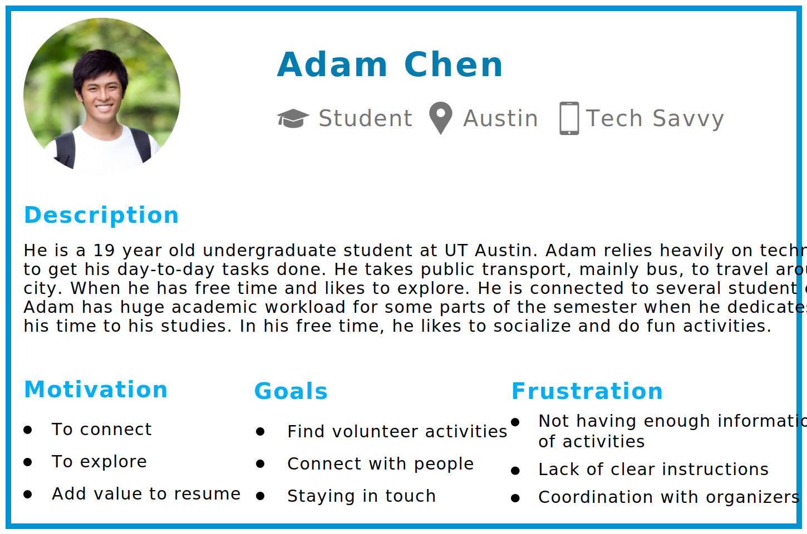
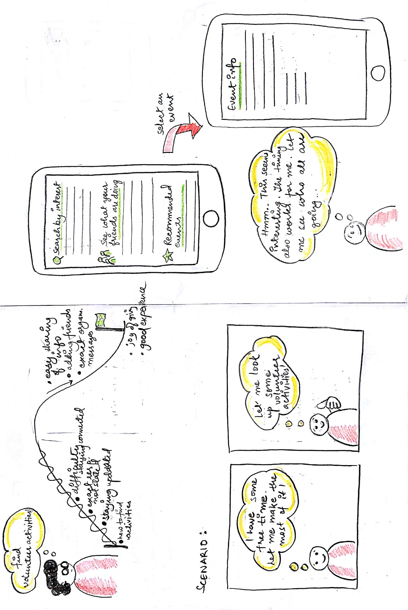
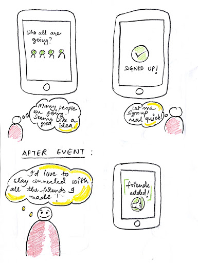

WeVol: Platform to Find Volunteering Opportunities
Description:
WeVol is a platform for sharing and managing information about volunteer organizations and activities.Our app can help volunteers find volunteer work they are interested in by browsing different categories of activities or searching directly. What’s more, the app will push activities to volunteers based on their interests.
Team members: Yu-Kuan Hwang, Ritambhara Singh, Zihan Yang
Motivation
According to study about Volunteering trend in America in 2015 by the Bureau of Labor Statistics, Volunteer rates were lowest among 20- to 24-year-olds (18.4 percent).
We decided to make a mobile application as 86% of Americans in this age group own a smartphone.
Process

Interview

Affinity Diagram
First, we gathered all of our notes taken during the interviews we’d had and form them into sticky notes. Next, we stick all the sticky notes onto the whiteboard, putting the ones closely related next to each other, forming basic categories. Finally, we go through each of the notes to group them more systematically and specifically, forming categories such as motivation, interest, and expectation.

Fig: Work Activity Affinity Diagram
Hierarchical Task Inventory Model

Fig: Hierarchical Task Inventory Model
Persona
We developed a persona based on the work role data we extracted from the interviews.
Storyboard
We developed the storyboard based on the workflow model, work roles interaction diagram, and the information flow. The models were created from the data we gathered from the interviews.
 Prototype
Before building the prototype, we referred to our previously made blueprints to deeply realize the information flow and nature of the task.
We initially did a low-fi prototype, and included factors we gathered from the interviews. After doing some pilot test on the low-fi prototype, we adjusted our medium-fi prototype based on the feedbacks.
For the medium-fi prototype, we focused more on the depth rather than the features. As feedback from the pilot test indicated that we originally had too much information. Thus, downsizing of the features led to cleaner and simpler interface.
Low Fidelity Prototype
We brainstormed on the UI elements based on our own mental models. However, there was still some uncertainty about them as we were unsure what our users will expect. We then decided to make a low-fi prototype on Balsamiq as making changes in it would be easier.The UI of this prototype included elements that we came up with from our own experience of using mobile apps.
The low fidelity prototype was made with Balsamiq. Download

Fig: Screenshots of Lo-fi wireframes made on Balsamiq
Medium Fidelity Prototype
After understanding the users’ mental model through the lo-fi prototype pilot test, we started building a medium-fi prototype on Figma. We chose Figma as it is a cloud-based tool which is fairly easy to learn and it lets us all collaborate on a project at the same time. As our app was meant to be for iOS, we referred to iOS design guidelines and adapted the relevant elements from there. This was done to ensure consistent design.
Prototype:
Video of Prototype Walkthrough
Usability Testing
We designed four user tasks to test the usability of our prototype:
1. Create an account to log in WeVol
2. Find the volunteer activity “Habitat for Humanity” in Austin and register for it
3. Approve the friend request from Diana Klaus
4. Cancel the activity you have registered for
For the pilot test, we asked one user to go through all these tasks and talk out loud her thought process, wrote down all the steps during each task and let her rate the difficulty of each task after completing them. In the end, we asked for her thoughts about our prototype.
Based on the pilot test, we learned that we need to divide long-term volunteer activities and one-time volunteer activities. What’s more, the long-term activity should provide access for users to change the date they participate in the activity. We will also add a reminder of friend request in navigation bar in the next version of our prototype.